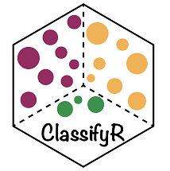

ClassifyR: Performance evaluation for multi-view data sets and seamless integration with MultiAssayExperiment and Bioconductor

ClassifyR’s performance evaluation focuses on model stability and interpretability. Based on repeated cross-validation, it is possible to evaluate feature selection stability and also per-sample prediction accuracy. Also, multiple omics data assays on the same samples are becoming more popular and ClassifyR supports a range of multi-view methods to evaluate which data view is the most predictive and combine data views to evaluate if multiple views provide superior predictive performance to a single data view.
Installation
The recommended method of installing ClassifyR is by using Bioconductor’s BiocManager installer:
library(BiocManager)
install("ClassifyR", dependencies = TRUE)The above code will install all packages that provide feature selection or model-building functionality. If only one or two methods are desired then the dependencies option could be omitted and those packages providing functionality installed manually.
Website
Please visit the ClassifyR website to view the main vignette as well as articles that provide more in-depth explanations for various aspects of the package. Details of performance evaluation, multi-view methods and contributing a wrapper for a new algorithm to the package are provided.